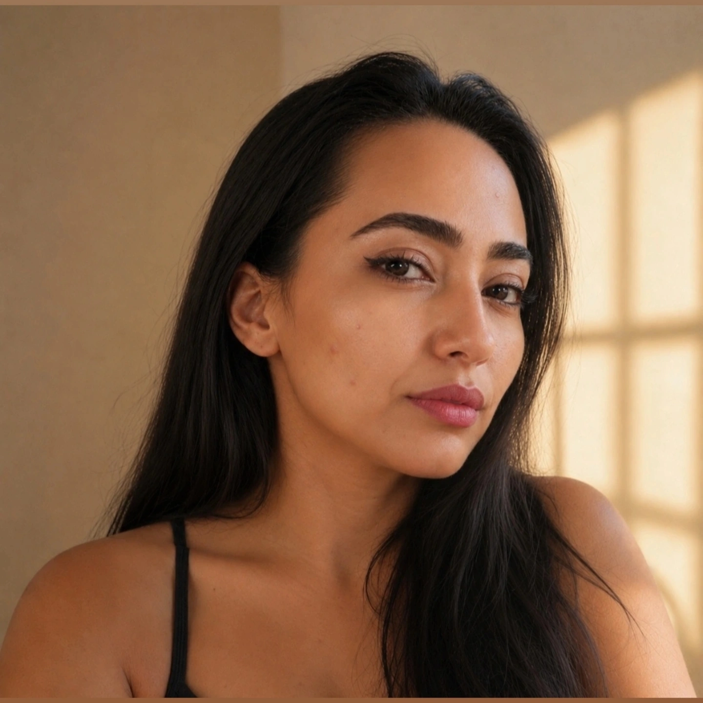

Olá! Meu nome é Ilma Azevedo e sou professora do ensino fundamental. Sou formada em Letras Inglês pela Universidade Federal do Ceará (UFC) e atualmente sou estudante de Análise e Desenvolvimento de Sistemas (ADS) pela Universidade Federal do Cariri (UFCA).
Letras Inglês - Universidade Federal do Ceará (UFC)
Análise e Desenvolvimento de Sistemas - Universidade Federal do Cariri (UFCA) (em andamento)
Atuo como professora do ensino fundamental, onde tenho a oportunidade de ensinar e inspirar jovens estudantes. Com minha formação em Letras Inglês, trabalho para desenvolver as habilidades linguísticas dos meus alunos de forma criativa e engajadora.
Estou em busca de novos desafios profissionais que combinem minha experiência em educação com os conhecimentos adquiridos em desenvolvimento de sistemas. Meu objetivo é continuar aprendendo e crescendo, explorando as oportunidades oferecidas pela tecnologia para aprimorar a educação e criar soluções inovadoras.